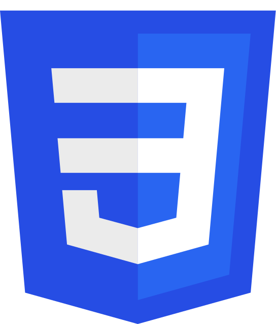
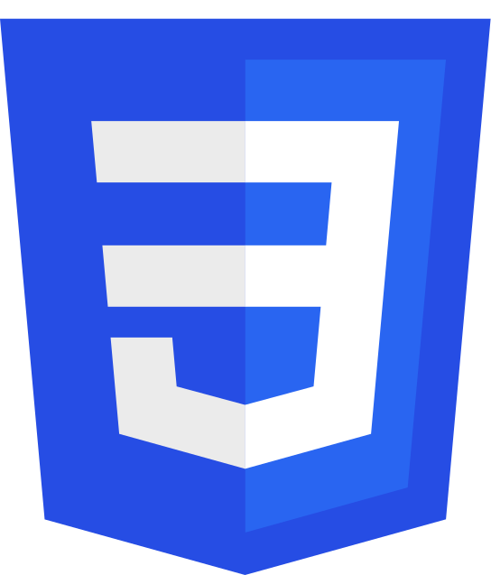
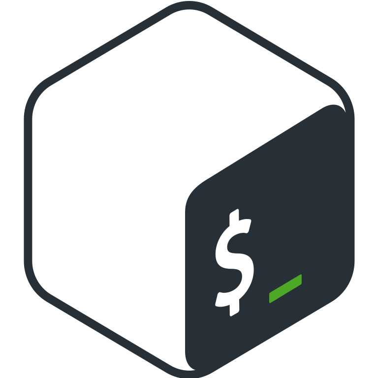
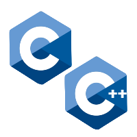
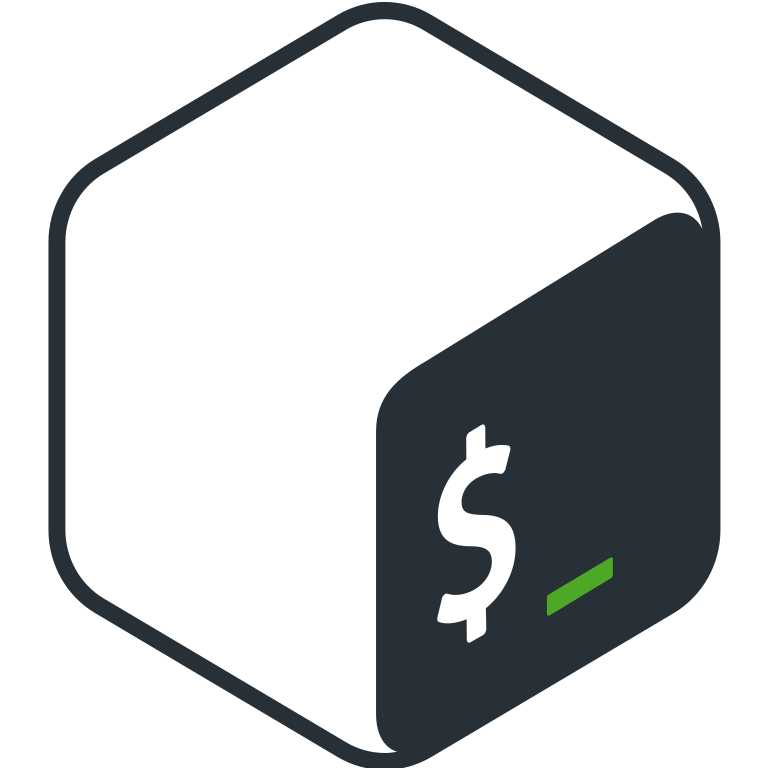
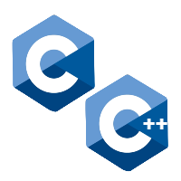

Who am I ❔
First of all,
Me :
I live in Strasbourg, in the East of France.
I'm in my second year at Epitech, an IT School.
I like everything that has to do with linguistics.
IT :
2020 : Having always been passionate about computers and having grown
up in them, it seems obvious to me to study in this field. I started programming last
year, all my knowledge was acquired
by
self-taught.
I started to learn HTML and CSS, it's a student currently in first year at
ESGI who initiated me, as well as the Open Classroom Courses of Mathieu Nebra.
2021 : A few months later, I started Python after a short break. I
followed several trainings
like Graven's, some Udemy courses and also projects on Github and StackOverflow !
I also learned the language used by Microsoft Disk Operating System, Batch and Unix Shell (bash), where
I have
some knowledge.
2022 : I started programming in C langage. I know all the advanced basics of the language, which allowed me to learn more about the computer and memory.
I also have small notion's in ASM, such as Syscall's.
In November of the year 2022, I started C++.
Finally, I am crazy about CTF, I love spend my time on RootMe and I recently started the machines on HackTheBox & TryHackMe.
 

 


